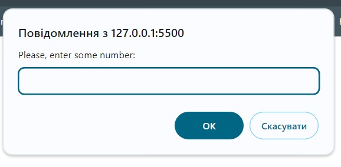
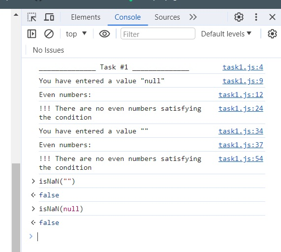

Напишіть код який бере значення від користувача (prompt)
і виводить у консоль всі парні числа, що менші за задане. Наприклад,
якщо користувач ввів число 10, програма має вивести
наступне: 2, 4, 6, 8. Додаткові вимоги:
Реалізуйте рішення 2 способами:
з використанням циклу for та while
Код має перевіряти, чи значення у змінній є числом. Якщо воно не є
числом, програма має вивести повідомлення про помилку.
Приклад виконання програми:
let value = prompt(); // 10
// Вивід у консоль
2
4
6
8
Приклад з помилкою
let value = prompt(); // 'abc' - Не тип даних Number
// Вивід у консоль
Помилка: введіть число
Однієї умови !isNaN(userNumber) недостатньо (додаю
скрін), тому все таки лишаю по-своєму. Щодо зауваження, що можна
зробити перевірку на
if (userNumber !== null && !isNaN(userNumber)) - цього не
достатньо. Дякую за наводку - дослідила детальніше (так, я була не
достатньо уважна, можливість значення null не врахувала),
тим не менше мій кейс з порожнім рядком перевірка на
null не вирішує.
prompt("...") надає користувачу дві кнопки для натиснення
- OK або Cancel/[Скасувати]

Натиснена OK може повернути "", якщо в поле
вводу нічого не було введено.
Натиснена Cancel/[Скасувати] дійсно повертає
null чи введено, щось чи ні.

Порожній рядок, як і null не "ловляться" черезу
!isNaN(userNumber).
Для зручності перевірки обох випадків втавила код двічі - один раз
через for (...) {...}, інший - через
while (...) {...}
Цикл, який змушує користувача вводити значення, поки воно задовільнить
умову - прибрала.
Допоміг Google і мануально підібрала таку умову -
!isNaN(parseFloat(userNumber)) , бо
parseFloat(userNumber) - повертає значення
NaN для
null, "", true, false, undefined, NaN.
Ще над роботою над третім завданням вигадала таку умову
if(userNumber) , бо поверне
null для всіх випадків із [userNumber = null] / [userNumber = ""]. Ну але ще треба перевіряти чи той рядок число... Тому лишила !isNaN(parseFloat(userNumber)) - так лаконічніше.
Перевірку на дріб, на від'ємне значення - не прибрала. Я не вийшла за
тему заняття. А у мене не буде іншої нагоди запитати поради.